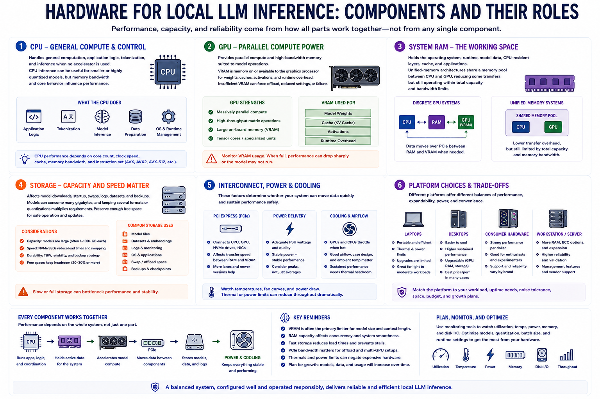

Core Hardware Concepts
Connecting to LMS... Progress: in progress

Narration
The CPU handles general computation, application logic, tokenization, and inference when no accelerator is used. CPU inference can be useful for smaller or highly quantized models, but memory bandwidth and core behavior influence performance.
A GPU provides parallel compute and high-bandwidth memory suited to model operations. VRAM is memory on or available to the graphics processor for weights, caches, activations, and runtime overhead. Insufficient VRAM can force offload, reduced settings, or failure.
System RAM holds the operating system, runtime, model data, CPU-resident layers, cache, and applications. Unified-memory architectures share a memory pool between CPU and GPU, reducing some transfers but still operating within total capacity and bandwidth limits.
Storage capacity and speed affect model downloads, startup, swaps, logs, datasets, and backups. Models can consume many gigabytes, and keeping several formats or quantizations multiplies requirements. Preserve enough free space for safe operation and updates.
PCI Express connects discrete devices and can affect transfer behavior when layers or data move between system memory and GPU memory. Power supplies, cooling, chassis airflow, and electrical capacity determine whether peak performance can be sustained safely.
Laptops trade portability for thermal and power constraints. Desktops are easier to cool and expand. Consumer hardware may provide strong value, while workstation or server hardware may add memory, reliability, management, and support. Match the platform to workload and operational expectations.